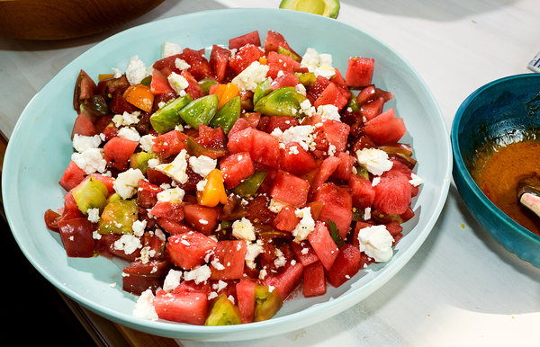

Tomato and Watermelon Salad

Description
An unexpected but deliciously addictive flavor combination! This recipe serves two, but you may want it all for yourself.
Good Salad
Ingredients
- 1 pint cherry tomatoes, halved
- 2 cups cubed seeded watermelon
- 6 large basil leaves, thinly sliced
- 1/2 cup crumbled feta cheese
- 1 teaspoon lemon zest
- 2 tablespoons extra-virgin olive oil
- 1 1/2 tablespoons white balsamic vinegar
- salt and pepper to taste
Steps
- Place the tomatoes and watermlon into a mixing bowl
- Sprinkle with basil,feta cheese, and lemon zest
- Drizzle with olive oil and balsamic vinegar
- Toss gently
- Season to taste with salt and pepper